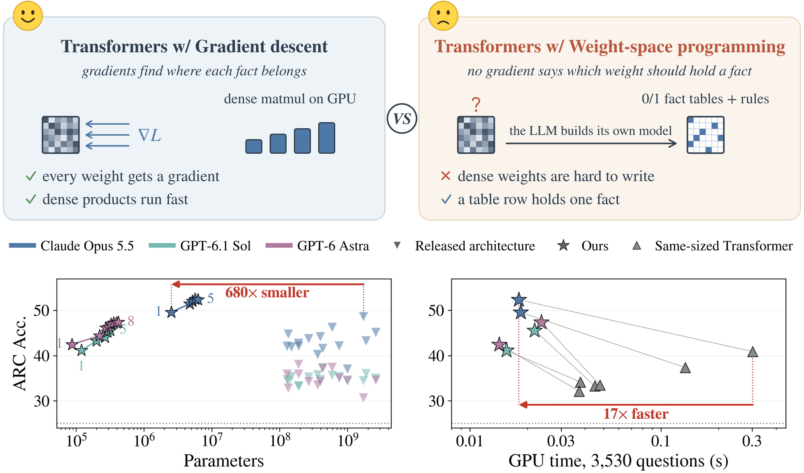
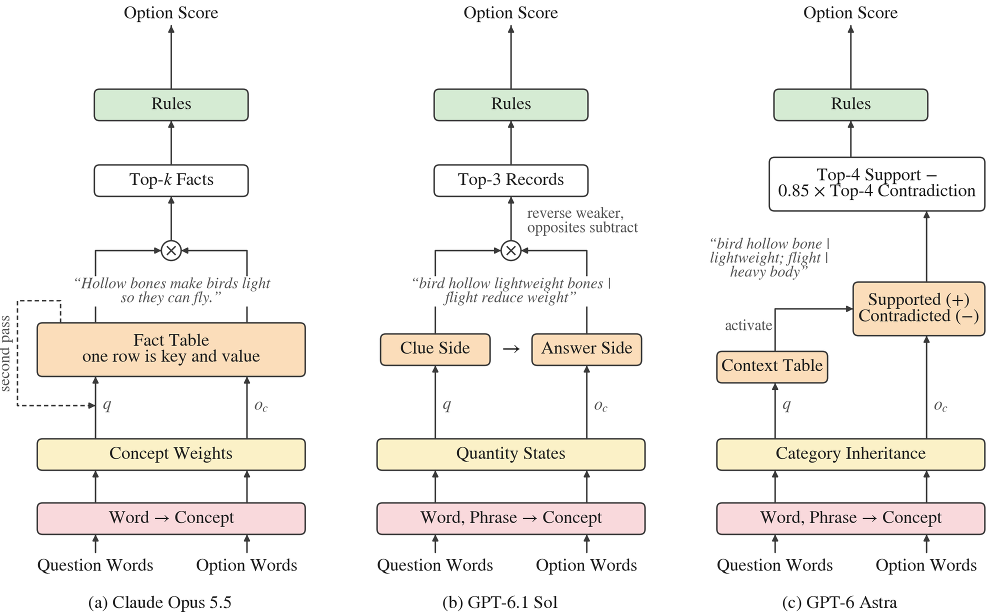
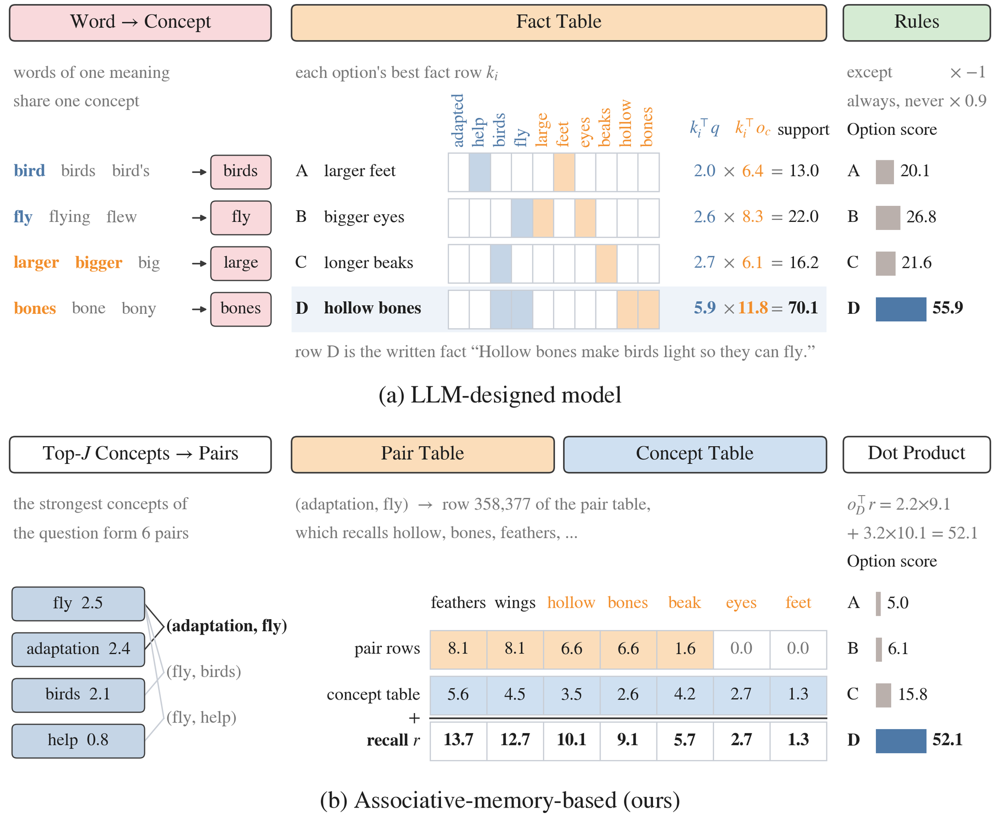
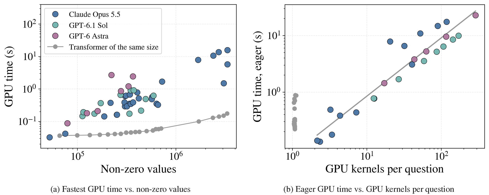

Weight-Space Programming Doesn't Need Transformers
Transformers were chosen because they train well with gradient descent and run fast on GPUs. In weight-space programming, a large language model (LLM) writes target weights by hand without gradient-based training, so those reasons no longer apply. When left free to design with ten labeled science questions and a sandbox, three frontier LLMs all compile plain-text facts into a sparse table read by a fixed procedure.
1POSTECH

01 · What the LLMs build
All three LLMs converge on sparse concept tables
Given only ten labeled ARC science questions and an execution sandbox, Claude Opus 5.5, GPT-6.1 Sol, and GPT-6 Astra all build the same kind of model. Each LLM writes plain-text lines of science facts and a build script that groups related words into concepts and compiles each line into a row of a sparse concept table.
At test time, a fixed lookup procedure matches the question and each candidate option against the table, scores each option from its best-matching few rows, and adds hand-written rules. Each LLM refines its model in the sandbox by writing practice questions, inspecting errors, and adding rows or rules, while the three models differ mainly in how a written row is split.

02 · Why a table
Sparse tables keep answers traceable and edits local
A sparse table lets the LLM state what each weight means, trace a wrong answer to its row, and rewrite that row without changing unrelated answers. In Claude Opus 5.5's models, keeping only the best row per option nearly matches the full model, and removing one written line changes 0.5 to 1.8 answers on average, compared with 4.8 and many more in written Transformers.
Most written two-layer Transformers, including all six from Claude Opus 5.5, score below plain BM25 keyword search over the text that the LLM wrote for them, whereas most table models score above it. A written Transformer stores many memories under dense overlapping keys, and this result is consistent with interference.

03 · Our associative-memory-based model
Reading computed addresses makes written tables fast on GPUs
LLM-designed models score every stored fact for every question, so work per question grows as the writer adds facts. They also launch from two to nearly three hundred GPU kernels per question across multiple scoring passes. Across 46 LLM-designed variants timed on an RTX 3090, only one runs faster than a same-sized two-layer Transformer, and the median is 9.4 times slower.
Our associative-memory-based model keeps line-by-line writing while fixing the forward pass. A build script folds written lines into a concept table and a pair table read at computed addresses from pairs of question concepts. Each question reads 120 pair-table rows and computes one concept-table product, so GPU time at a fixed concept count does not depend on how many values the pair table holds.


04 · Results
Sparse table models score higher across all three LLMs
| Writer | Written released architectures | Written two-layer Transformer | LLM-designed (first / last) | Ours (first / last) |
|---|---|---|---|---|
| Claude Opus 5.5 | 43.1 | 36.1 | 50.8 / 54.4 | 49.6 / 52.4 |
| GPT-6.1 Sol | 35.0 | 36.3 | 44.6 / 47.4 | 41.2 / 45.6 |
| GPT-6 Astra | 34.4 | 32.6 | 42.7 / 46.2 | 42.5 / 47.4 |
Values report ARC test accuracy (%) on 3,530 questions, where chance accuracy is 25%. The last two columns give the first and last generation of each lineage in row order, with last generations 5, 7, and 5 for LLM-designed models and 5, 5, and 8 for ours. Gradient-descent and fine-tuned baselines are in the paper.
05 · Beyond ARC
Lookup tables extend to text tasks within clear limits
Starting from a released pretrained checkpoint instead of random initialization changes how the LLMs edit weights. In most runs across the three LLMs, the writer changes under 1% of the weights to calibrate answer readout or adjust science-word embeddings, usually keeping the checkpoint's accuracy. Full overwrites with a hand-written model happen mostly on checkpoints near chance and never above 72% accuracy.
Run unchanged on other four-option tests, Claude Opus 5.5's ARC table models reach up to 50.1% accuracy on SciQ science questions while staying near 25% chance on MMLU. When asked to produce text answers on SQuAD 1.1 span extraction and SciQ word-by-word answer generation, the LLM still builds written lookup tables with a fixed reader, scoring above written Transformers on both tasks.
Current weight-space programming has clear limits, and pretrained LLMs remain far more accurate overall. Written models recall only what the LLM states and learn no representations of their own. On CIFAR-10 raw image pixels, written models reach only 21% to 28% accuracy and stay far below gradient descent, because a writer must name what each weight means.
Team
Authors
The paper and BibTeX entry will appear here with the arXiv release.